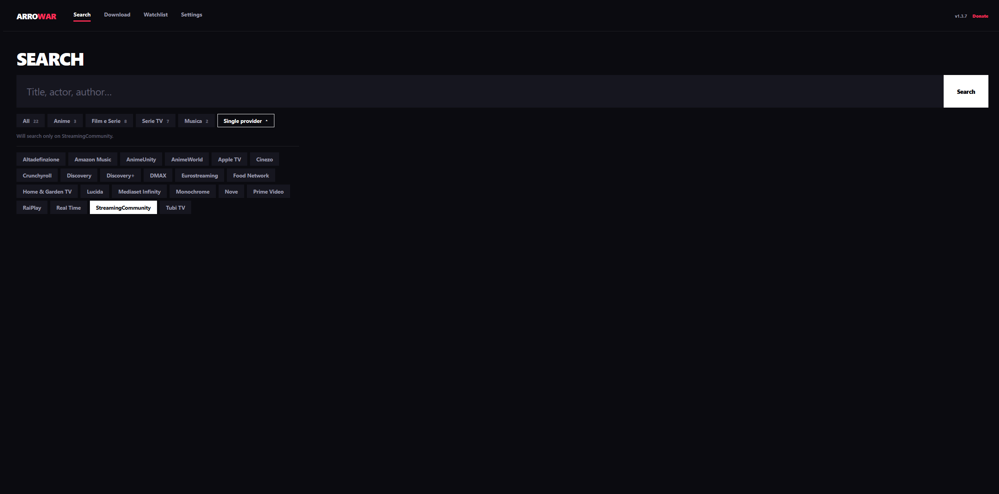
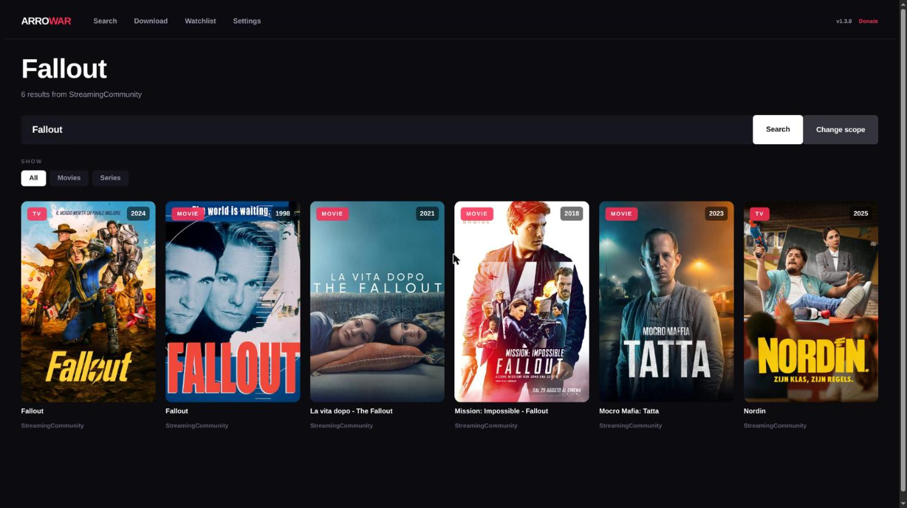
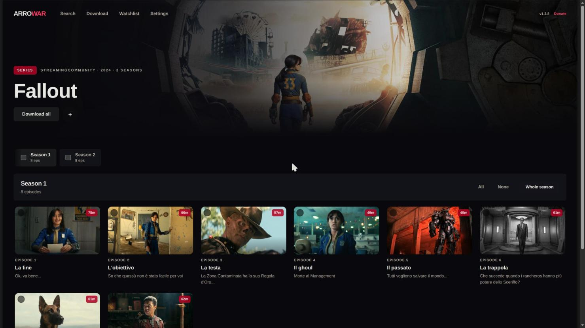
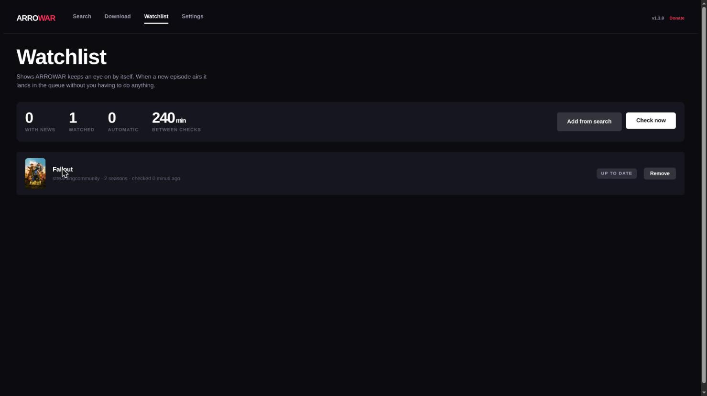
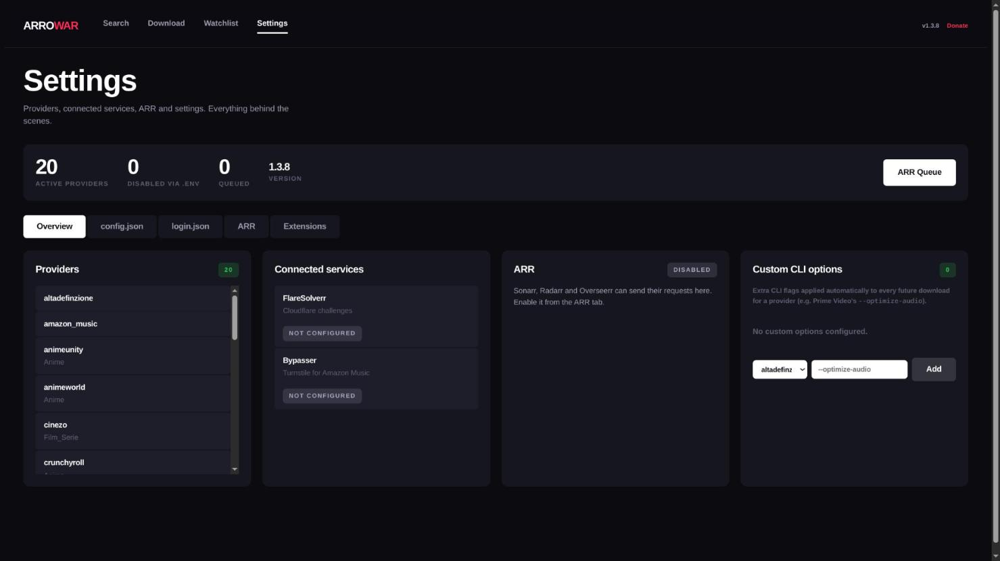
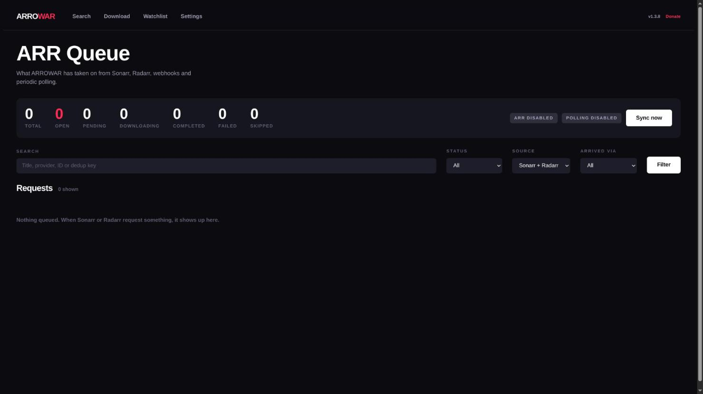

Web GUI

Django web interface to search and download from the browser.
Quick Start
pip install -r GUI/requirements.txt
python GUI/manage.py migrate
python GUI/manage.py runserver 0.0.0.0:8000
Open http://<host>:8000. For Docker/NAS use the Docker and NAS guides instead of the dev server.
Features
Search & download
- Home (
/): pick a site and search. - Results (
/search/): download, add to the watchlist, or open the series-detail view (seasons/episodes). - Start download (
/download/): queues the movie or episodes. Track selection follows theconfig.tomlfilters, like the CLI. Tick Choose tracks manually (overrides the Quality picker) to pause the download and pick tracks in the Choose tracks panel on the Downloads page: select tracks (at least one), press Download selected tracks, or Stop to cancel. A download waiting for your choice doesn't use a concurrent-download slot. GUI only: not available for watchlist auto-downloads. hidden_servicesinconfig.toml(orVIBRAVID_HIDDEN_SITES, comma-separated, for Docker) switches services off in the CLI, TUI and GUI alike (details).VIBRAVID_DISABLED_SITESis still read as an alias.


Downloads dashboard
/downloads/: live queue and history (polled from api/get-downloads/). Some providers may show 0% progress while downloading.
| Action | Endpoint |
|---|---|
| Stop a running download | api/kill-download/ |
| Remove one queued download | api/remove-queued-download/ |
| Clear all queued (active keep running) | api/clear-queued-downloads/ |
| Stop and clear the queue | api/kill-and-clear-queue/ |
| Clear history (completed/failed) | api/clear-history/ |
Watchlist & auto-download
/watchlist/ tracks series and movies and downloads new content automatically.
- Add from search results; remove items or clear the list. Metadata (seasons, poster, TMDB id) loads in the background.
- Update all: re-check everything now.
- Auto-download per item (
watchlist/auto/<id>): for a series, enable it on a season to download newly published episodes. - Run now (
watchlist/auto-run/): check immediately. - Polling interval (
watchlist/auto-interval/): 15 min, 30 min, 1 h, 2 h, 4 h (default, 14400 s), 6 h, 12 h or 24 h. Saved asDEFAULT.watchlist_interval_secondsinConf/config.toml; it overrides theWATCHLIST_AUTO_INTERVAL_SECONDSenvironment variable, which only sets the initial default. - Preferred quality (up to 1080p) per item: an episode counts as done only when a local file of that quality exists, and the watchlist waits until the provider confirms it. Quality discovery works for StreamingCommunity only; other providers use the configured quality.

Settings
/settings/ edits Conf/config.toml and Conf/login.toml in tabs, validates before saving and writes a .backup next to the original.
ARR.max_concurrent_downloadsapplies live; most other settings need a reload (api/reload-config/) or a restart.- Custom CLI options sets a service's
args(details); removing them leavesargs = ""inlogin.toml.

Bot / remote-control API
api/bot/* is a JSON API for bots and scripts (used by the Telegram bot):
| Endpoint | Purpose |
|---|---|
POST api/bot/search/ |
{"query": "...", "site": "__all__" \| "__cat__:<cat>" \| "<site>"} -> results |
POST api/bot/seasons/ |
Seasons/episodes of a result |
POST api/bot/download/ |
Start a download |
POST api/bot/sites/ |
Available sites/categories |
POST api/bot/status/ |
Progress of a download |
POST api/bot/cancel/ |
Stop a download |
POST api/bot/logs/ |
Recent log lines |
Set VIBRAVID_BOT_SECRET to require a matching X-VibraVid-Token header. Without it these endpoints are unauthenticated: set it before exposing the GUI beyond your LAN.
Custom service upload
Settings -> Providers -> Add a provider installs a site module ZIP (api/upload-service/) into VibraVid/services/<name> and reloads the registry (api/registry-status/). It only appears in the GUI dropdown if it ships GUI/searchapp/api/<service_name>.py. Uploaded providers lists your uploads, each with a Remove button (click twice to confirm); built-in services and imp_service sources can't be removed. With Docker, uploads live in the container's writable layer and are lost when it is recreated: re-upload or use an imp_service source.
Updates
A banner appears when a newer release exists (api/version/check/, cached 1 h); api/version/update/ applies it (Docker one-click). api/binaries/update/ is the GUI counterpart of --binary-update. api/imp-service/refresh/ (the Refresh external import button) pulls the newest commit of the imp_service repositories and reloads the services. auto_check_update = false hides the banner.
ARR stack page
/arr-stack/: the ARR processing queue (filter by status/source/sync) and sync trigger (api/arr/trigger-sync/). Setup: ARR Integration.

CSRF & reverse proxy
Behind a reverse proxy or outside the LAN, Django may reject requests on CSRF checks. Set as needed:
| Variable | Use |
|---|---|
CSRF_TRUSTED_ORIGINS="http://127.0.0.1:8000 https://yourdomain.com" |
Domains/ports that differ from Django's expected origin |
SECURE_PROXY_SSL_HEADER_ENABLED=true |
Proxy terminates TLS: trust the forwarded scheme |
Apache must also send RequestHeader set X-Forwarded-Proto "https".
Recommended for proxy deployments:
ALLOWED_HOSTS="yourdomain.com"
USE_X_FORWARDED_HOST=true
CSRF_COOKIE_SECURE=true
SESSION_COOKIE_SECURE=true